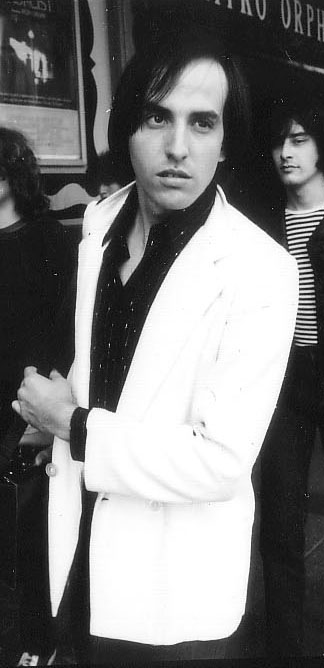
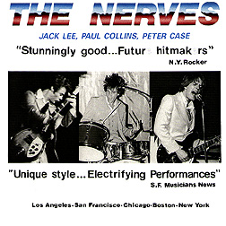

|  |
Welcome To The Paul Collins' Beat official Fan Club 1979-Present
| Biography |
by Chris Woodstra |
|
A Los Angeles-based power pop outfit formed by Paul Collins (ex-Nerves), the Beat recorded its self-titled debut LP after signing to Columbia Records in 1979. Despite good reviews and some regional success, the album sold less than a million copies worldwide. The Beat toured with various stadium and club acts, including The Jam, The Police and The Ramones. A second attempt, 1982's The Kids Are the Same (this time credited to Paul Collins' Beat), sold approxamately 1 million copies worldwide but briefly broke up the band. However, Collins returned the following year with a harder-rocking lineup including Patti Smith Group drummer Jay Dee Daugherty. Their EP, To Beat or Not to Beat, was again an internatational hit; it proved to be the band's last recording until their reformation in 1989. While it seemed that the Beat's only claim to fame would be forcing the (English) Beat to change its name in the U.S., their albums are now seen as classic examples of 70s punk rock and power pop. Paul Collins returned to a solo career into the '90s, signing to Wagon Wheel Records, but has continued to tour and record with Paul Collins' Beat, into the 21st century. The Paul Collins' Beat official website is http://www.paulcollinsbeat.com
|
|
PAUL COLLINS' BEAT RECORD NEW ALBUM
Here at the Paul Collins' Beat fanclub, we have confirmed that Paul Collins' Beat have recently finished recording a new album. Though we have few details, the release date is set for 2005. Paul Collins' Beat will conduct a world tour in support of the new album, entitled "Flying High." |
PAUL COLLINS' BEAT RECALL TOURING WITH THE RAMONES
Hello, Great site!!! Would like to talk to you. Please call me at number listed below. Thank you, Paul Collins (212) ***-****
"Once one time when we were on tour, there was this huge venue we played. It was a concert hall, almost as big as a full-scale arena. The crowds were really bad and there were mobs of girls outside waiting to get their hands on us. That night, our manager had to double the band, which means they found look-alikes for each of us. While the 4 of us left through the side door and left in a cramped, small 2-door sedan, the 4 guys impersonating us (The Beat) exited through the back door of the club."
"Those were good times," says Paul Collins. "I remember one time when the club we were at set 2 tables up as part of the backstage autograph session and industry meet. The Ramones were seated on the table to the left and we (The Beat) were seated on the table to the right. Joey (Ramone) kept complaining about the loud noises coming from the other room and when I looked up, 50 or 60 girls came running backstage, passing right through security. Somehow, a wild boar had gotten into the club and was terrorizing the fans. There were girls running everywhere, screaming for their lives. We must've been stuck there for 6 hours after the show that night but it was a good bonding experience for everyone. Afterwards, I had dinner with Joey (Ramone) and then we called some of the girls. We spent the rest of the night at a party Joey (Ramone) was invited to." |
PAUL COLLINS' BEAT MUSIC VIDEOS FROM THE RAMONES ROCK N ROLL HIGH SCHOOL TOUR AVAILABLE FOR FREE DOWNLOAD
These videos are taken from The Ramones Rock N Roll High School Tour in 1979. Paul Collins' Beat toured with The Ramones in support of this film and album soundtrack. Please visit the official Paul Collins' Beat website PAULCOLLINSBEAT.COM for further details. The official website includes rare photos, interviews, tour dates, merchandise and other information for fans.
Paul Collins' Beat Fan site
Paul Collins' Beat 2 albums on 1 cd reissue!
Wounded Bird Records has just released a special cd containing the two albums To Beat or Not To Beat and Long Time Gone. This cd boasts several bonus tracks and all of the songs have been digitally remastered using the latest in today's technology. Please refer to the official site for Wounded Bird Records http://www.woundedbird.com for ordering information, photos and tracklistings. |

THE NERVES PAUL COLLINS, JACK LEE AND PETER CASE!
PAUL COLLINS' BEAT "ALL OVER THE WORLD" TOUR 2005
Send an email |